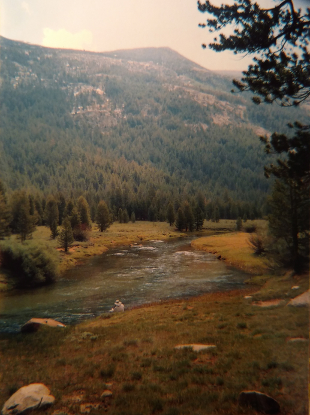
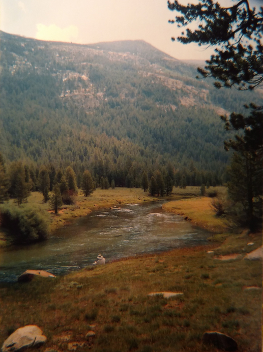
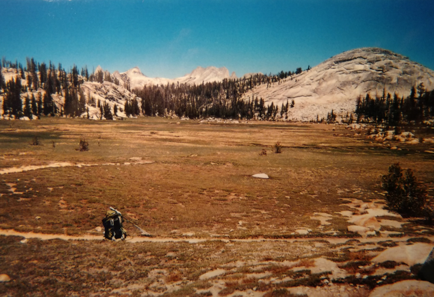
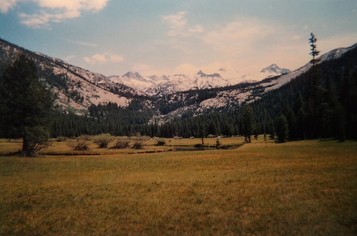
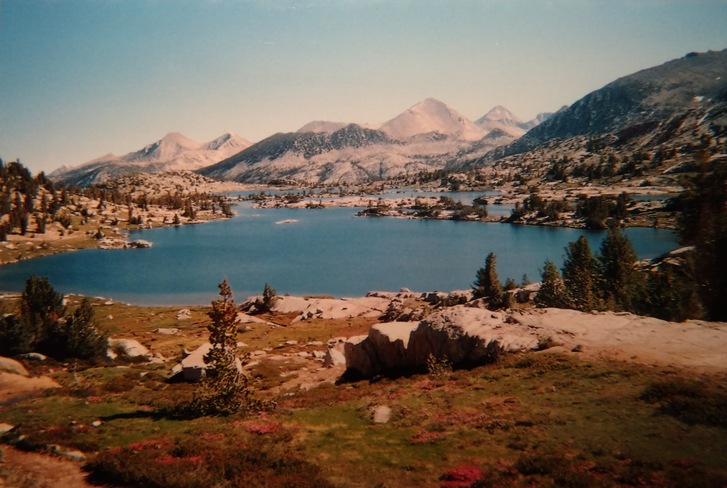
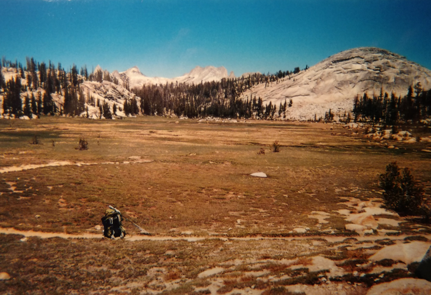
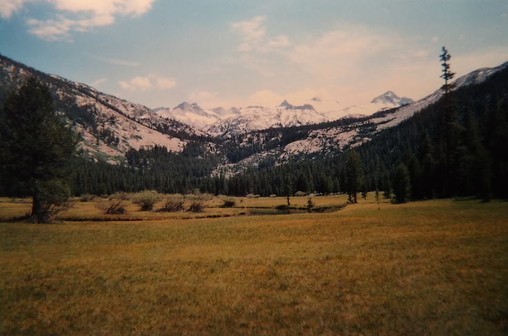
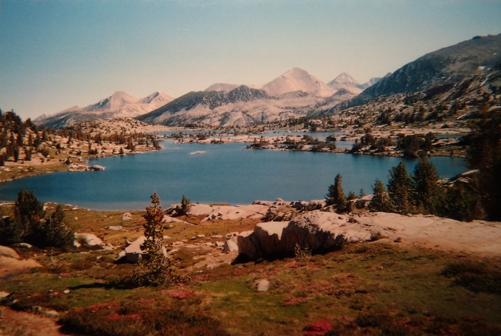

I love backpacking. I took my first foray into a wild place with my dad when I was only 11 years old, and I've been hooked ever since! After a few autumns of short trips in the southern Appalachian mountains of Georgia, North Carolina, and Tennessee, I decided to go on my first long backpacking trip right after I graduated high school. I was incredibly fit after my senior-year track season, and ready to head into the high sierra in central California and hike a little over 200 miles on "America's most beautify hike," the John Muir Trail. Check out these photos from my trip!


 



 




